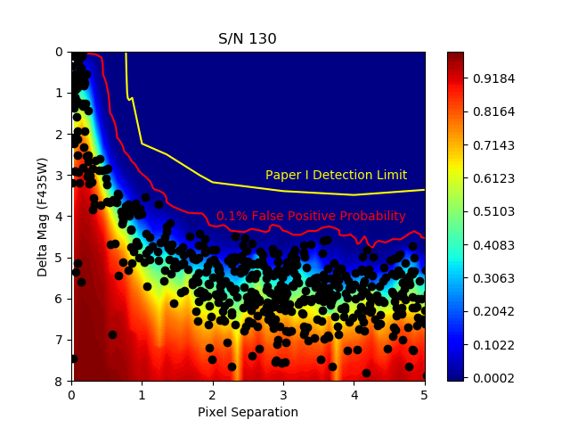
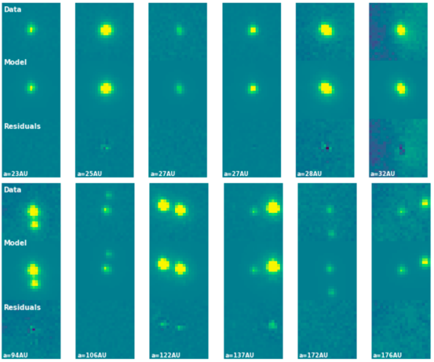
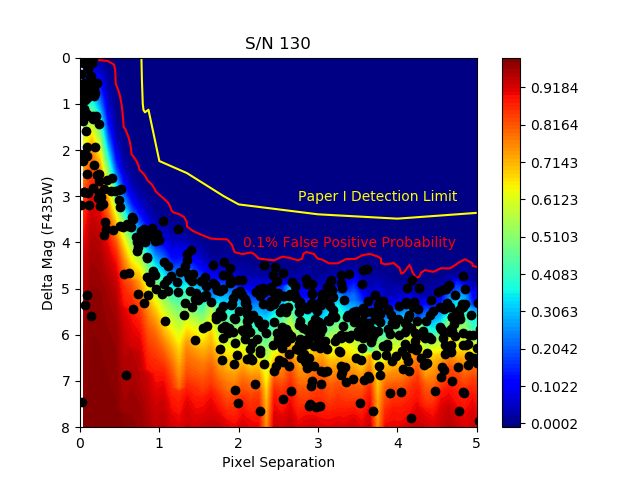
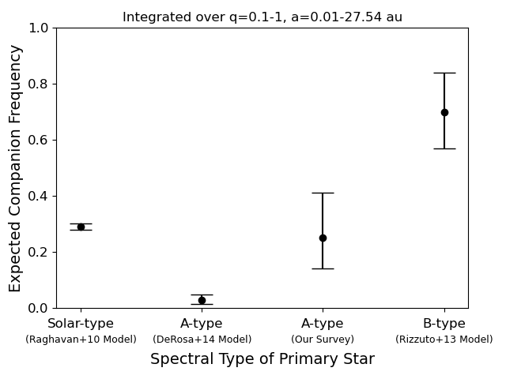

![ Fig. 1. False-positive probability map in separation and Δmag space. The color scale represents the false-positive probability, where larger differences in magnitude correspond to a higher likelihood of a false-positive fit. I show an example in the F435W filter with high S/N (130). Overplotted are the 0.1% false-positive probability lines and the 90% completeness lines from De Furio et al. (2019). The black circles represent the best-fit binary parameters from the double-PSF fitting algorithm to the 1000 artificial single stars. All 1000 best fits fall below the 0.1% positive probability line, indicating that fits above this line are inconsistent with a single source. I can resolve companions down to 0.5 pixels in separation on ACS/WFC using my double PSF-fitting code.](images/acs_sensitivity.png){kind=link}
![ Fig. 2. Displayed are binary detections made in the F435W filter. The top panel shows the 21 × 21 postage stamp cutout of the HST/ACS data, the middle panel shows our double-PSF model, and the bottom panel shows the residuals. Each binary is labeled with its estimated separation. Sources are listed left to right and top to bottom in order of increasing orbital separation. Top row are all binaries between 1-1.5 ACS/WFC pixels in separation, bottom row are all binaries > 4 ACS/WFC pixels in separation.](images/hst_binaries.png){kind=link}

The first identification of a turnover in the initial mass function within a stellar population, NGC 2024. See link for NASA Press Release.
Space-based, diffraction limited, wide-field imaging allows for the efficient characterization of multiplicity within a dense stellar population. With Hubble Space Telescope (HST) data, I developed a double point-spread function (PSF) fitting algorithm that utilizes empirically derived PSF models and exhibited its sensitivity to companions at sub-pixel and sub-diffraction limit scales on the Advanced Camera for Surveys (ACS). With HST/ACS mosaics in the Orion Nebula Cluster (a high-mass, high density star-forming region), I identified dozens of companions to low-mass stars (0.1-0.4 solar masses) down to 10 au in separation. With my Bayesian demographic analysis, I showed that the companion population to low-mass stars in the ONC is consistent with the Galactic field population, as is the mass ratio distribution. While companions in Taurus (a low density star-forming region) may be more frequent than the field, my results demonstrate that dynamics in high density regions may sculpt the companion population, disrupting only the widest most weakly bound companions during states of very high density. Further information can be found in two ApJ publications, here and here.
I was awarded an HST Cycle 30 program (GO 17141, PI: De Furio) to explore multiplicity down to 10 Jupiter masses for separations > 0.5λ/D, ~7 au, in NGC 1333, an intermediate density star-forming regions with no high mass stars. With Gaia, Gemini, Keck Paper in preparation, see this link for a presentation at the University of Arizona Origins Seminar that presents the preliminary results.
With CHARA link and link for the ApJ publications.

The first identification of a turnover in the initial mass function within a stellar population, NGC 2024. See link for NASA Press Release.

Detection of the second Y-Y dwarf binary system ever, WISE1935-1546, using JWST/MIRI probing the lowest mass binaries in the Galaxy. See link for paper.

Resolving companions below the diffraction limit with HST WFC3/IR. See link for paper.
For inquiries about collaborations, details about my research and outreach, or general questions, please reach out to me through email.